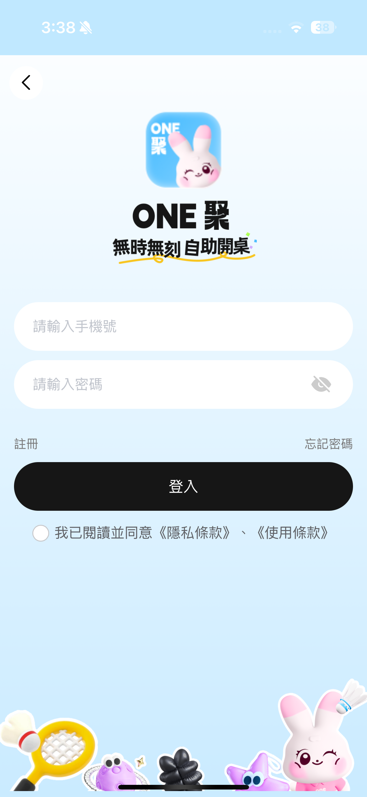

ONE聚 用戶端說明手冊
客人從找店、預約、付款、到店開門，到續時、取消、退款的完整流程與規則。給客服與新進同仁的教育訓練手冊，也是處理客訴時的查詢依據。
本次更新重點
相較 2026 年 3 月的 v1.0 手冊，App 新增與改變了以下內容。章節標 新增 代表全新功能，改版 代表規則或畫面有改。
時段衝突智慧推薦 新增
包廂使用中或時段被訂走時，自動推薦最近可用時段、縮短時長或改訂其他包廂。
電子發票 新增
預約、續單、儲值都能選手機載具、Email、公司統編或捐贈，可存成預設。
長期訂位分頁 新增
店家幫客人建立的固定場次，可在訂單頁直接查看每一場。
餘額紀錄 新增
每家店的餘額增減都能按月份查詢，含訂單號與異動後餘額。
藍牙喇叭密碼 新增
訂單詳情可看喇叭配對密碼、一鍵複製與更新密碼。
店鋪頁大改版 改版
店家公告、選日期看預約進度、包廂分類、點圖放大、大門開門、售貨機。
取消與退款規則 改版
可退金額一律轉入該店 ONE 餘額，並有每日／每月自助取消上限。
會員條碼方向 改版
改為 App 出示 QR Code、由繳費機掃描手機。
變更密碼、系統更新 新增
「我的」新增變更密碼與系統更新公告；刪除帳號改為兩層確認。
- 優惠券和電子票券不能疊加：選了電子票券，優惠券、套票和餘額抵扣都會被清掉。
- 客人自行取消的退款不會退回信用卡或 LINE Pay，一律轉入該店的 ONE 餘額。
- 更換位置不用店家同意，但只能換同等級、每筆一次，也沒有補退差價。
- 提前離店已付費用不退。
1系統簡介
「ONE聚」是 ONE 桌遊的客人端 App：客人在 App 上找店、選包廂、線上付款，到店後用訂單裡的密碼或開門鍵直接進包廂，全程不需要櫃台人員。
App 結構
| 底部分頁 | 內容 | 沒登入時 |
|---|---|---|
| 首頁 | 店家列表、搜尋、城市切換、我的帳戶摘要、出示會員條碼 | 可以瀏覽 |
| 訂單 | 全部訂單、長期訂位、各狀態分頁 | 會導向登入 |
| 我的 | 個人資料、餘額、票券、優惠券、加盟、客服、系統更新、帳號設定 | 會導向登入 |
啟動時會看到的提示
- 第一次開啟：跳出「服務協議和隱私政策」，按「同意並接受」後不會再出現；按「暫不同意」會關閉 App。
- 有新版本時：回到 App 會自動檢查新版本。總部設為強制更新時，提示視窗沒有「取消」，必須更新才能繼續用。
- LINE Pay 付完款：會自動跳回 App，直接打開剛付款的訂單。
2登入、註冊與密碼 改版
目前只能用「手機號碼＋密碼」登入，沒有 LINE、Apple 或 Google 登入。

登入
- 輸入手機號碼與密碼
- 勾選同意條款勾選「我已閱讀並同意《隱私條款》、《使用條款》」，沒勾會提示「請同意用戶協議」。
- 按登入
| 客人看到的訊息 | 意思 |
|---|---|
| 該手機號暫未注册 | 這支手機還沒註冊，請先註冊。 |
| 該帳戶已被禁用，請聯系管理員 | 帳號被停用，請轉總部客服。 |
| 該帳戶已註銷 | 客人之前刪除過帳號，無法恢復（見 刪除帳號）。 |
註冊 改版
| 欄位 | 說明 |
|---|---|
| 暱稱 | 必填 |
| 手機號碼 | 台灣手機，09 開頭共 10 碼。已註冊會顯示「手機號已注册」。 |
| 驗證碼 | 按「獲取驗證碼」收簡訊，60 秒後才能重發。 |
| 密碼／確認密碼 | 兩次輸入要一致。 |
| 邀請碼 新增 | 選填。店家有開「分享獎勵」時，邀請人和新會員都會拿到店家設定的優惠券。 |
| 出生日期 新增 | 選填，只能在註冊時填寫。 |
忘記密碼
- 輸入手機號碼，按發送驗證碼60 秒內不能重發，太快會顯示「發送頻繁」。
- 填入驗證碼並提交
- 設定新密碼
變更密碼 新增
輸入原密碼、新密碼和確認密碼。新密碼至少 4 碼，而且不能跟原密碼相同。
3首頁 改版
- 頂部左邊是「ONE聚」和目前城市，點城市可切換；右邊是搜尋框。
- 兩張大卡片左邊「開店評估表」連到加盟資訊（見 開店加盟資訊）；右邊「出示會員條碼」是給繳費機掃的會員 QR Code（見 會員條碼）。
- 帳戶區沒登入時顯示「立即登入領取會員權益」橫幅；登入後顯示「我的帳戶」卡：頭像、暱稱、會員卡號、電子票券張數、優惠券張數、帳戶餘額。點數字可進入對應頁面。
- 店家列表可切換「全部／桌遊／運動」。每張卡有店圖、店名、距離、營業時間、地址、電話、地圖和「立即預定」。往下滑每次多載入 10 家。
城市定位與搜尋
- 城市定位：上方是 GPS 定位到的目前城市（需開啟定位權限），下方是已開通的城市。城市清單由總部後台即時更新，不是固定數量。
- 搜尋：輸入店名搜尋，會保留歷史搜尋紀錄，可一鍵清除。
出示會員條碼 改版
- 登入 App沒登入會提示「請登錄之後再使用」。
- 首頁點「出示會員條碼」跳出「請掃碼」視窗，顯示個人 QR Code。
- 把手機畫面對準繳費機的掃碼器掃到後繳費機會自動登入會員。
4店鋪詳情 改版
由上到下依序是以下區塊：
| 區塊 | 說明 |
|---|---|
| 店家公告 新增 | 店家有設定公告時，一進店鋪頁會先跳出「店家公告」，按「我知道了」關閉。 |
| 店家資訊 | 輪播圖、店名、地址、地圖導航、撥打電話。 |
| 邀請好友 改版 | 右上角分享鍵，只有店家開啟「分享獎勵」才會出現。點了會顯示個人邀請碼，可「複製邀請碼」給朋友註冊時填。不是社群分享或 QR Code。 |
| 功能按鈕 | 我的票券、錢包儲值、領優惠券、購買票券；有售貨機的店多一個「售貨機」。舊版的「分享好友」按鈕已拿掉。 |
| 會員等級／本店餘額 | 顯示在這家店的 Lv.等級和本店可用餘額。 |
| 大門開門鍵 新增 | 門的圖示，店家有裝大門門鎖才會出現。按下送出開門指令，成功顯示「操作成功」。每次開門都會留紀錄。 |
| 查看預約進度 新增 | 可以先選日期（今天以後），下面每間包廂的時間軸就會顯示那天的預約狀況，包含長期訂位。點包廂時，選好的日期會自動帶入預約頁。 |
| 只看空閒房間 改版 | 今天：隱藏使用中的包廂。其他日期：只顯示那天完全沒有預約的包廂。 |
| 包廂分類 新增 | 店家有設分類時，出現「全部／分類名稱」標籤可篩選。 |
| 包廂卡片 | 照片（點圖放大，可雙指縮放）新增、名稱、最多 6 個設備標籤、「$X 小時/起」、時間軸（已預訂／可預訂）、套票清單、「立即預定」。 |
包廂狀態 改版
| 狀態 | 意思 |
|---|---|
| 空閒中 | 現在沒人使用。 |
| 使用中 | 有客人使用，會顯示倒數「XX:XX:XX 結束」。 |
| 待打掃 新增 | 上一組客人剛離開，還沒清潔。 |
| 打掃中 新增 | 清潔人員正在整理。 |
5預約訂位流程 改版
- 01 確認可預約時間時間軸用顏色標出「已預訂／可預訂／我的選擇／已過」。直接點時間軸就能選開始時段（每格 30 分鐘）新增。點到已預訂的區塊會提示「HH:MM - HH:MM 已被預訂」。有特殊時段計價時，可以展開看各時段的價格。
- 02 選擇開始時間日期用月曆選，可選今天起到兩個月後。開始時間預設是「現在＋5 分鐘」，可以調到分鐘。
- 03 選擇時長點店家的套票（灰色代表這個時段不能用，點了會提示「該套票無法在這個時間點使用」），或選「自訂時長」1～12 小時。訂單金額由系統依時段計算，可按「更多詳情」看分段價格。
- 04 選擇票券優惠券、電子票券；會員折扣會依本店等級自動帶入。
- 05 付款方式可開啟「餘額抵扣」，再搭配店家開通的線上付款。
- 電子發票店家有開通才會出現，詳見 電子發票。
- 按「結帳」
時段衝突智慧推薦 新增
- 包廂正在使用中：一進預約頁會跳出「包廂目前使用中」，推薦最近可預訂的時段（預設 1 小時），可選「使用此時段」或「我自訂時間」。
- 選到已被預訂的時段：頁面中間出現「此時段已被預訂」，提供「改成某時段開始（同時長）」、「縮短為可用時長／套票」、「換其他包廂」等選項。衝突沒解決前按結帳，會提示「請先解決時段衝突」。
預約時可能看到的訊息
| 訊息 | 原因 |
|---|---|
| 付款新訂單，將刪除你未付款的訂單 | 客人已有一筆未付款訂單。確定後舊單會被取消，再建立新單。 |
| 不可預約過去時間段 | 選到已經過去的時間。 |
| 預約時段已超過營業時間 | 結束時間超過店家營業時間。 |
| 該包厢 XX:XX 後不可預定 | 店家設定了停止接單時間。 |
| 此時段店家暫停預約 | 店家在這段時間暫停預約（整修、包場等）。 |
| 系統保留 X 分鐘離場時間，請訂某時間之後 | 前後客人需要緩衝時間：桌遊包廂與「待付款／待使用」訂單間隔 30 分鐘、與「進行中」訂單間隔 15 分鐘；運動場地間隔 10 分鐘。 |
| 有新訂單正在進行付款中 | 別人正在付款同一個時段，請稍後再確認。 |
| 該時間段已存在長期預訂訂單 | 和店家的長期訂位衝突。 |
| 此套票只能在 X-Y 之間購買 | 套票有限定可用時段，或活動未開始／已結束。 |
6付款方式與組合規則 改版
能用哪些付款方式，取決於店家開通了什麼。
| 項目 | 規則 |
|---|---|
| 藍新金流 | 選項顯示為「Apple pay／信用卡／轉帳／超商」。在 App 內開啟付款頁。 |
| LINE Pay | 開啟 LINE App 付款，付完自動跳回訂單。不能用 LINE Pay 帳戶裡的餘額，要用 LINE Pay 綁定的信用卡或簽帳金融卡。 |
| 餘額抵扣 | 可以和線上付款搭配。餘額足夠時總計變成 $0，直接用餘額結帳。 |
| 優惠券 | 要達到「滿 X 可用」門檻，否則提示「未滿足使用條件」。可以和套票、自訂時長、餘額、線上付款一起用。換套票或時長時，已選的優惠券會被清掉，要重選。 |
| 會員折扣 | 依本店會員等級自動套用「滿 X 折 Y」，不用另外選。 |
| 電子票券 | 不能和優惠券、套票、自訂時長、餘額抵扣同時使用，選了票券會自動清掉這些。時長以票券為準，訂單金額 $0，也不套用會員折扣。 |
- 「請選擇支付類型」：總計大於 0，除了餘額抵扣還要再選一種線上付款，或改用電子票券。
- 「該支付方式無法支付0元訂單，請使用餘額支付！」：$0 的訂單只能用餘額或電子票券結帳。
- 「該店家目前尚未提供電子支付」：店家沒開通線上付款，只能用餘額或票券。
付款完成後
- 餘額或票券付款：直接進入訂單詳情。
- 藍新：在 App 內完成付款頁。LINE Pay：在 LINE 完成後自動跳回訂單詳情。
- 沒付款的訂單 10 分鐘後自動取消，時段會釋出給其他人。
7電子發票 新增
店家有開通電子發票時，預約、續單、儲值和購買票券的結帳頁會出現發票選項。只用餘額全額付款時不會顯示。
| 開立方式 | 需要填寫 |
|---|---|
| 手機載具 | 手機條碼 |
| Email 載具 | |
| 公司報帳 | 統一編號（8 碼）、公司抬頭、Email |
| 捐贈 | 可選創世（919）、伊甸（25885）、兒福（885521）、店家指定單位，或自行輸入 3～7 碼的愛心碼 |
- 勾選「儲存為我的預設發票資料」，下次結帳自動帶入，也可以按「清除」。
- 開立後可以在訂單詳情看到發票號碼和狀態。
- 儲值時，如果店家的儲值發票還沒設定好，會顯示「儲值電子發票服務尚未就緒，請聯絡店家」，暫時無法付款。
8訂單列表 改版
分頁
全部／長期訂位 新增／待付款／待使用／進行中／已取消／已使用／已過期／待退款／已退款。舊手冊的「已完成」現在叫「已使用」。
訂單卡片
顯示店家與包廂、狀態、起訖時間和時長、金額、訂單編號；底部「查看訂單詳情」，進行中的訂單會顯示「查看密碼與設備」。
| 狀態 | 卡片上的快捷按鈕 新增 |
|---|---|
| 待付款 | 「立即付款」（彈出付款視窗，可選餘額、線上付款和電子發票）、「取消」 |
| 待使用 | 「開始使用」、「取消」 |
| 進行中 | 店家有開放續單時顯示「延長時間」 |
長期訂位分頁 新增
顯示店家為客人建立的長期訂位：期間、固定場次（星期幾、幾點）、「已完成 N／共 M 場」，以及每一場的日期、時段、座位、金額和狀態。預設只顯示上一場和接下來兩場，可以按「顯示全部」。
9訂單詳情與到店使用 改版
頁面內容
- 預約資訊：包廂照片、名稱、店名、開始／結束時間、時長。展開「更多訂單信息」可看訂單編號、下單時間、付款方式、餘額抵扣、訂單金額、會員折扣、實付金額。
- 電子發票 新增：有開立時顯示開立方式、狀態、對象和發票號碼。
- 下單須知：店家自訂的注意事項。
設備控制（只在「進行中」顯示）
| 設備 | 操作 |
|---|---|
| 門鎖 | 顯示「密碼：XXXX」和「開門」鍵。開門成功提示「門已開」；如果提示「設備發送信號超時」，請客人直接在門鎖上輸入密碼。 |
| 電器開關 | 燈、冷氣等開關，名稱由店家自訂。 |
| 藍牙喇叭 新增 | 顯示喇叭名稱和「藍牙配對密碼」，可「複製密碼」或「更新密碼」。訂單結束時系統會自動更換喇叭密碼。 |
底部按鈕 改版
| 按鈕 | 何時出現 | 規則 |
|---|---|---|
| 立即開始 | 待使用 | 最多可提前 1 小時開始。包廂還沒打掃時會提醒「該包廂還未打掃，確認是否到店」；前一位客人還沒離開會被擋下。到了預約時間系統也會自動開始。 |
| 續單 | 進行中，且店家開放續單 | 見 續單。舊版叫「編輯」。 |
| 更換位置 | 待使用、進行中 | 客人可自助更換：只能換同等級包廂、每筆訂單只能換一次；已開始的訂單只能在開始後 10 分鐘內換。目標包廂要空閒，前後時段不能衝突。沒有補差價或退差價。 |
| 取消訂單 | 待付款、待使用 | 見 取消訂單與退款。 |
| 提前離店 | 進行中 | 兩層確認：先顯示「提前離店，已付費用不予退還」並倒數 3 秒，再長按 3 秒才會送出。已付費用不退。 |
續單（延長時間）
- 只有店家有開放續單、訂單進行中且還沒結束時才能續。
- 畫面會顯示剩餘時間倒數，紅字提醒「續單請在倒數結束前付款完畢」。
- 可選套票或自訂 1～12 小時；店家另有設定續單的最短、最長時間。
- 付款方式和預約相同（優惠券、電子票券、會員折扣、餘額、藍新、LINE Pay、電子發票）。
- 每筆訂單最多只能用一次「續時電子票券」。後面時段已有人預訂、超過營業時間或碰到長期訂位，都無法續單。
- 沒付款的續單 10 分鐘後自動取消。
10取消訂單與退款 改版
| 訂單狀態 | 能不能取消 |
|---|---|
| 待付款 | 可以直接取消；如果有先扣餘額，會退回餘額。 |
| 待使用（已付款） | 要同時符合下面 4 個條件。 |
| 進行中 | 不能取消（沒有按鈕）。提前離店也不退費。 |
已付款訂單的取消條件
- 店家有開放客人自行取消沒開放會顯示「訂單不允許取消！」。
- 距離開始時間夠早超過店家設定的時數會顯示「訂單已超出可取消時間！」。
- 沒超過每日／每月自助取消次數超過會顯示「您已達到今日（今月）自助取消上限。若需取消本訂單，請聯繫店家協助。」次數每天、每月自動歸零。
- 依店家規則計算退款比例例如「開始前 N 小時取消可退 X%」。
- 使用過的優惠券會退回；電子票券會退回 1 次使用次數。
- 待使用訂單過了結束時間還沒使用，會自動變成「已過期」。
11餘額、儲值與會員等級 改版
錢包儲值
- 店家方案：「儲值 X 送 Y」，由店家自訂。
- 補差額專區：50／100／150／200／250／300 元快捷金額。
- 付款方式：店家開通的藍新或 LINE Pay；店家沒開通電子支付時無法線上儲值。
- 底部提示：儲值限本店使用。也可以在店內繳費機用現金儲值。
餘額與餘額紀錄 新增
- 上方是各店加總的總餘額和「消費明細」；下方逐店列出餘額，每家店都有「餘額紀錄」和「去儲值」。
- 餘額紀錄：單一店家的完整異動流水，可以左右切換月份、選月份，或看「本月／全部紀錄」，並統計增加、扣除和筆數。每筆顯示說明、時間、訂單號、增減金額和異動後餘額。
- 餘額不能跨店使用。
會員等級與折扣
- 每家店分開計算等級，從 Lv.0 到最高 Lv.5。
- 依客人在這家店的累計消費金額升級，訂位、續單、儲值都會累計。
- 各店設定每個等級的「滿 X 折 Y 元」，結帳時自動套用；電子票券訂單不套用。
12電子票券與優惠券 改版
我的電子票券
- 分「未使用／已使用／已過期」。卡片顯示可用次數、有效期限、預約是否可用、續單是否可用、取得時間。
- 可用的票券按「去使用」→ 選包廂 → 立即預訂。
購買電子票券
- 挑選票券列表顯示價格、限用次數、名稱和有效期。
- 按「去購買」看詳情使用範圍（該店）、包廂類型、有效期、使用時長、預約與續單限制。
- 付款可用優惠券折抵，再選餘額或藍新、LINE Pay。售完會提示「該電子票卷已售罄」。
- 只能在發券的店使用。
- 預約的結束時間不能超過票券到期日（「不可預約超出電子票卷過期時間的訂單」）。
- 可能限定使用時段（「該電子票卷只能在 X 到 Y 之間使用！」）。
- 次數用完會顯示「電子票券已用完！」。
優惠券
- 我的優惠券（我的 → 優惠券）：分「未使用／已使用／已過期」，顯示「滿 X 可用」、有效期和取得時間。
- 我的票券（店鋪詳情）：只看本店的優惠券和電子票券，並標示預約／續單是否可用。
- 領優惠券（店鋪詳情）：領取店家發放的券，按鈕會顯示「領取／已領取／已領完」。
- 取得方式：店家發放、領券、註冊時的邀請碼獎勵。
13我的（個人中心） 改版
- 頂部暱稱、會員卡號、「編輯個人資料」、頭像。
- 我的帳戶電子票券、優惠券、帳戶餘額。
- 常用功能我要充值、我的訂單、我要加盟、聯繫客服（顯示客服電話，可直接撥打）。
- 其他關於我們、系統更新 新增、個人資料、變更密碼 新增、版本（有新版時顯示紅字「有新版本」）、登出。
- 最下方「危險操作」刪除帳號。
個人資料
可以修改頭像、暱稱、性別、個性簽名，改完按「保存」。手機號碼、會員卡號不能改；出生日期只能在註冊時填。舊手冊寫的「通知設定、優惠通知、隱私設定」目前沒有。
系統更新 新增
顯示總部發布給用戶端的改版公告（標題、日期、版本、內容），最多 20 則。公告由總部即時發布，不用更新 App 就看得到。
登出與刪除帳號
- 登出：之後要重新輸入手機號登入，餘額、票券、訂單紀錄都不會消失。
- 刪除帳號 改版：第一層列出後果（餘額永久消失、票券與優惠券失效、訂單紀錄無法找回、無法恢復），倒數 3 秒才能按「仍要刪除」；第二層要「長按 3 秒」才會完成。
14售貨機 新增
店家有自動販賣櫃時才會出現這個按鈕。
- 選商品依分類瀏覽，或在上方輸入櫃位號碼搜尋。已售完的商品無法點選。
- 進入商品詳情，選付款方式後按「付款」App 內不提供現金付款。
- 查看商品訂單可在商品訂單列表看「全部／待付款／已取消／已支付」。未付款的商品訂單 10 分鐘後自動取消。
15開店加盟資訊 改版
頁面標題是「想開一間 24H 無人桌遊店？」，列出參考資訊：
頁面註明實際費用會依地區等條件不同。底部有兩個按鈕：「前往加盟官網」和「聯絡我們」，會用外部瀏覽器開啟 ONE 加盟官網。App 內沒有填表申請功能。
16店內繳費機（客人端操作）
客人到店也可以用繳費機，訂單和儲值會同步到 App。
| 功能 | 說明 |
|---|---|
| 登入 | 掃描 App「出示會員條碼」，或輸入手機號碼＋密碼。被店家封鎖的會員無法登入。 |
| 現場預約 | 選包廂（可依分類篩選）、時段、時長或套票；遇到衝突會建議時間。 |
| 付款 | 現金（紙鈔、硬幣，金額為 50 元倍數，自動找零）、LINE Pay 付款碼、會員餘額。付款中取消或逾時，會退還已投入的現金。 |
| 續單、儲值 | 可為進行中的訂單加時；可用現金儲值。 |
| 其他 | 查看我的訂單、販賣櫃購物。 |
17常見問題（客服用）
可以用 LINE 或 Apple 帳號登入嗎？
忘記密碼怎麼辦？
「出示會員條碼」怎麼用？
訂單要在多久內付款？超過會怎樣？
按結帳出現「請選擇支付類型」？
LINE Pay 付款失敗？
優惠券和電子票券可以一起用嗎？
取消訂單會退錢嗎？退到哪裡？
顯示「您已達到今日（今月）自助取消上限」？
可以提早進場嗎？
可以換包廂嗎？
怎麼延長時間？
門打不開？
藍牙喇叭連不上？
餘額可以跨店用嗎？首頁的餘額是什麼？
刪除帳號後還能用同一支手機重新註冊嗎？
18名詞解釋與教育訓練檢核
名詞解釋
| 名詞 | 說明 |
|---|---|
| 套票 | 店家設定的固定時長方案，例如「4 小時 $400」。 |
| 自訂時長 | 不選套票，自己選 1～12 小時，依時段計價。 |
| 特殊時段計價 | 國定假日、尖峰時段等不同價格，系統會自動分段計算。 |
| 本店餘額 | 客人在單一店家的儲值餘額，只能在該店使用。 |
| 電子票券 | 預付的使用次數券，有次數、效期與使用時段限制。 |
| 優惠券 | 滿額折抵券，可和套票、餘額一起使用。 |
| 續單 | 進行中的訂單加時。 |
| 長期訂位 | 店家為熟客建立的固定時段（例如每週二晚上），客人只能查看。 |
| 繳費機 | 店內的自助機台，可現金付款、儲值、續單。 |
教育訓練檢核表
勾選狀態只會存在你這台裝置上。